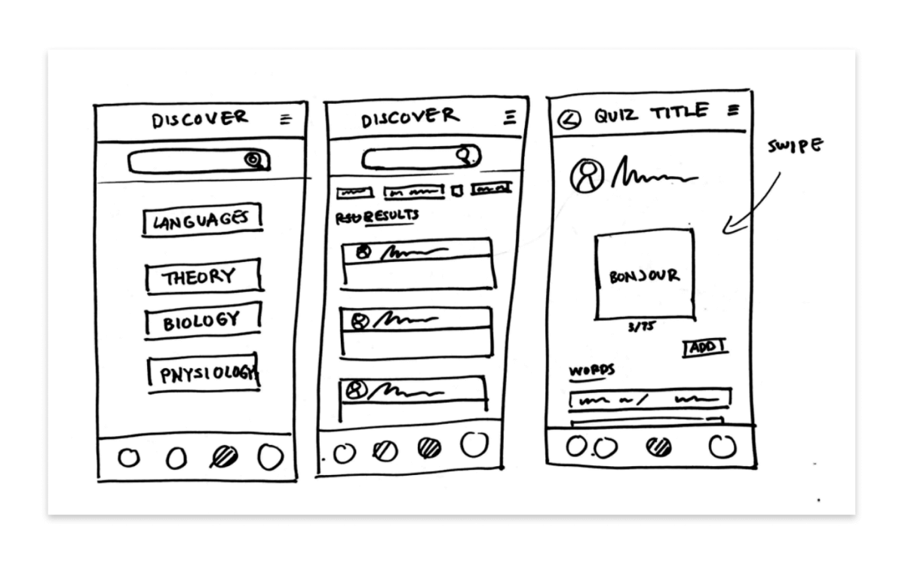
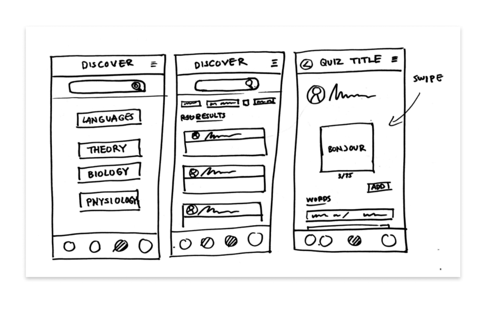

Problem Statement
How might we design a mobile app that empowers people to learn new vocabulary?
Objectives & Goals
The Challenge
Do you keep coming across new words in your workplace or general life? My challenge in this project was to bring to life a vocabulary-learning app called Sparki that helps people learn new words in their daily school and work lives.
The Process
The first step was to understand my audience. How? I started by interviewing my potential customers to understand their current frustrations and what solutions or methods they were currently using. I then conducted several competitor analyses to understand the current market and see what solutions other competitors were offering. After gathering and analyzing all the information, I took the condensed information and create a user persona to help keep my target audience in mind as I started to design a solution. Along the design process, I added information architecture methods to analyze tasks my users would try to accomplish in my app. The final stage was to sketch and prototype my solutions based on the information analyzed from my research stage.
The Goal
The goal was to present a prototype of a word-learning app that helps people retain words in a customized and organized way. I completed this project to show my competence in using UX methods to present the first iteration of a word-learning app. All the work presented was done by me and approved by my mentor and tutor at CareerFoundry.
Tools Used
Figma | Miro | Google Slides
Project Phases

Design and Testing
- Paper Wireframes
- Prototyping in Figma
- Usability Testing
- Implementing Changes
Phase 1 - Discover
Exploratory Research | User Interviews | Competitive Research
My first step in the project was to research. I conducted interviews to understand how potential customers were learning new words and what challenges they faced.
Interview Goals
- Find out how often users encountered new words
- What they found the most challenging when learning new words
- What mode of learning appealed to them most
- Their ideal length of study time
- What stood out the most when using a new tool for studying new words
Side note: In a real-life project I would be communicating with stakeholders at this point to get a clear idea of the business/project goals and objectives. For this project, I communicated with my tutor to understand the project details and goals.
When you learn a new word it’s hard to retain them over weeks, you have to go back and remember how to spell and pronounce them. Having a review every few days would help keep me in the loop!
- Vansh, College Student
Exploratory Research
During the research stage, I interviewed several participants to understand how potential customers were currently learning new words and what challenges they faced. After the interviews, I analyzed the information into three categories - doing, thinking, and feeling. I recorded suggestions and pain points to inform the next stage of my design.

Analysis of the Interviews

Competitor Research
Duolingo | Memrise | Rosetta Stone

Phase 2- Define
User Personas | Task Analysis | User Flows
Persona
I created a persona based on the user interviews to help guide the design as it progressed. Personas are a simple and memorable way of keeping our users and their goals in mind as we continue the design process.
- User stories
- Problem Statement
- Hypothesis Statement
Sparki’s Persona
User stories | Problem statement | Hypothesis statement


Phase 3 - Ideate 💡
User Personas | Task Analysis | User Flows
Before bringing out the whiteboard or paper to sketch a solution, I used information architecture to analyze tasks my users would accomplish on my app. Using the task analyses, I created user flows to map out the entry point, steps to complete the task, and the success criteria. This step helped me sort out the flow and organization of my app before I started drawing solutions and interactions for the user to accomplish their tasks.
Task analyses & user flows

Phase 4 - Design and Test
Paper Wireframes | Low and Mid-Fidelity Prototypes Brainstorming a Solution
I started turning my user stories, task analysis, and user flows into solutions by sketching wireframes on paper. Low-fidelity wireframes sketched out on paper are a fast way to iterate on ideas and designs. Once I finalized my low-fidelity wireframes, I continued to refine my design in Figma.
Wireframes
Hand-drawn paper wireframes

 

Phase 4 - Testing the Design
Usability Testing | Usability Report
The next stage was to test my first iteration with potential customers to check the usability and flow of the app. Updates were made to the mid-fidelity prototypes to include content and images in preparation for usability testing. I put together a test script and plan and started recruiting participants. Throughout the test, I had participants complete several tasks and recorded observations and comments to analyze later.
Usability Test Plan
Usability Test Script
Hi,____! Thank you for taking the time to help me test out the app I am working on. My name is Charity and I will first walk you through today’s session.
Today we will be testing different aspects of the word learning app called Sparki, just to let you know, this is not a test so there are no mistakes. This is an incomplete prototype, so there are likely errors and mistakes in it! - which is why we are testing it out. If you have any questions as we go along, please feel free to ask them.
Usability Testing
Usability Test Report
Jakob Nielsen’s rating scale
0 = I don’t agree that this is a usability problem at all
1 = Cosmetic problem only: need not be fixed unless extra time is available on project
2 = Minor usability problem: fixing this should be given low priority
3 = Major usability problem: important to fix and should be given high priority
4 = Usability catastrophe: imperative to fix before product can be released
Analyzing and Implementing Changes
After conducting usability tests on my prototypes, I prioritized the usability issues found during the tests and implemented the new changes into my prototypes.
Viewing Quizzes
Problem
Users found it difficult to locate the quizzes.
Steps to find a quiz
- Navigate to the folder tab
- Click the folder to find the quiz located in the folder

Solution
- Allow users to view quizzes first
- Make the folder view a second option
- The icon was changed

Make Quiz Button
Problem
Several testers found making a new quiz hard because the plus button wasn’t clear enough.
Solution
Change the icon button into a text button.

Developing the new quiz feature
Making new quizzes is an important feature of the app. I added a new tab so users could quickly and easily add new quizzes from anywhere in the app.
Final Thoughts
Throughout this project, I learn many things about my target audience, analyzing information, and prototyping a solution. Here are a few key takeaways I learned throughout the process.
- Feedback at an early stage is vital to keeping my design on track.
- Finding the right balance between detailed work and keeping up with the deadline can be tricky, and is something I am working on.
- Good design takes many iterations. The first iteration I completed was just the beginning.
Next steps
Throughout this project, I completed the first rough iteration of a language-learning app. This is just the beginning. Listed below are a few next steps I would take if I were to continue refining this design.
- Refine the quiz-making feature by adding dictation and screenshot options.
- Develop the interactive aspects of the app to keep users engaged and motivated to reach their learning goals.
- Collaborate with stakeholders and other team members to find creative ways to incorporate subscriptions and paid upgrades to the app.